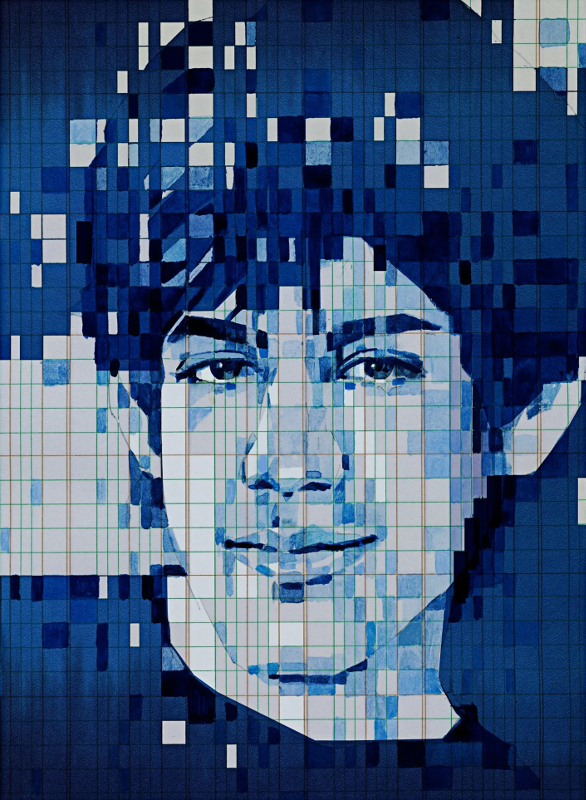

Guerilla Open Access Manifesto
Aaron Swartz
Informação é poder. Mas, como todo o poder, há aqueles que querem mantê-lo para si mesmos. O patrimônio científico e cultural do mundo, publicado ao longo dos séculos em livros e revistas, é cada vez mais digitalizado e trancado por um punhado de corporações privadas. Quer ler as revistas científicas apresentando os resultados mais famosos das ciências? Você vai precisar enviar enormes quantias para editoras como a Reed Elsevier.
Há aqueles que lutam para mudar esta situação. O Movimento pelo Acesso Aberto tem lutado bravamente para garantir que os cientistas não assinem seus direitos autorais por aí, mas, em vez disso, assegura que o seu trabalho seja publicado na Internet, sob termos que permitem o acesso a qualquer um. Mas mesmo nos melhores cenários, o trabalho deles só será aplicado a coisas publicadas no futuro. Tudo até agora terá sido perdido.
Esse é um preço muito alto a pagar. Obrigar pesquisadores a pagar para ler o trabalho dos seus colegas? Digitalizar bibliotecas inteiras mas apenas permitindo que o pessoal da Google possa lê-las? Fornecer artigos científicos para aqueles em universidades de elite do primeiro mundo, mas não para as crianças no sul global? Isso é escandaloso e inaceitável.
“Eu concordo”, muitos dizem, “mas o que podemos fazer? As empresas que detêm os direitos autorais fazem uma enorme quantidade de dinheiro com a cobrança pelo acesso, e é perfeitamente legal – não há nada que possamos fazer para detê-los.” Mas há algo que podemos, algo que já está sendo feito: podemos contra-atacar.
Aqueles com acesso a esses recursos – estudantes, bibliotecários, cientistas – a vocês foi dado um privilégio. Vocês começam a se alimentar nesse banquete de conhecimento, enquanto o resto do mundo está bloqueado. Mas vocês não precisam – na verdade, moralmente, não podem – manter este privilégio para vocês mesmos. Vocês têm um dever de compartilhar isso com o mundo. E vocês têm que negociar senhas com colegas, preencher pedidos de download para amigos.
Enquanto isso, aqueles que foram bloqueados não estão em pé de braços cruzados. Vocês vêm se esgueirando através de buracos e pulando cercas, libertando as informações trancadas pelos editores e as compartilhando com seus amigos.
Mas toda essa ação se passa no escuro, num escondido subsolo. É chamada de roubo ou pirataria, como se compartilhar uma riqueza de conhecimentos fosse o equivalente moral a saquear um navio e assassinar sua tripulação. Mas compartilhar não é imoral – é um imperativo moral. Apenas aqueles cegos pela ganância iriam negar a deixar um amigo fazer uma cópia.
Grandes corporações, é claro, estão cegas pela ganância. As leis sob as quais elas operam exigem isso – seus acionistas iriam se revoltar por qualquer coisinha. E os políticos que eles têm comprado por trás aprovam leis dando-lhes o poder exclusivo de decidir quem pode fazer cópias.
Não há justiça em seguir leis injustas. É hora de vir para a luz e, na grande tradição da desobediência civil, declarar nossa oposição a este roubo privado da cultura pública.
Precisamos levar informação, onde quer que ela esteja armazenada, fazer nossas cópias e compartilhá-la com o mundo. Precisamos levar material que está protegido por direitos autorais e adicioná-lo ao arquivo. Precisamos comprar bancos de dados secretos e colocá-los na Web. Precisamos baixar revistas científicas e subí-las para redes de compartilhamento de arquivos. Precisamos lutar pela Guerrilha pelo Acesso Aberto. Se somarmos muitos de nós, não vamos apenas enviar uma forte mensagem de oposição à privatização do conhecimento – vamos transformar essa privatização em algo do passado. Você vai se juntar a nós?
Aaron Swartz, Julho de 2008, Eremo, Itália